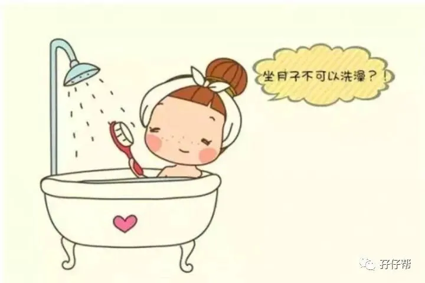
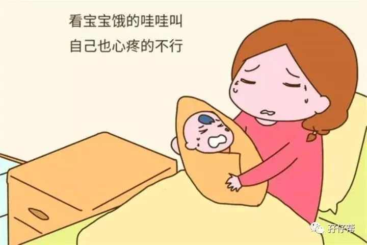
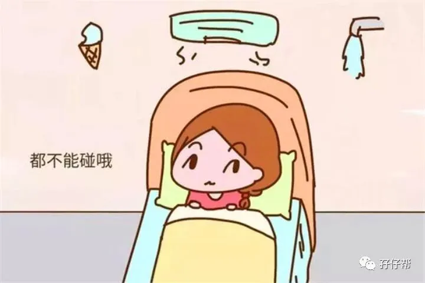

☝点击关注“孖仔帮” 与您分享双胞胎育儿经
文|圆圈妈 一个文思如尿崩的双胎妈妈
孖仔帮#重磅互动#环节收到一准妈妈的咨询，坐月子，去月子中心or请月嫂？
很遗憾，这两个我都没有经历过，不知其中利弊，给不了意见。
讲真，不管你是单胎，双胎，甚至多胎，坐月子均遵循一个原则：只要让自己在月子期间过得舒坦，不憋屈，怎么样都行。
经历了200多个日日夜夜的孕育之路，难道不应该换来女王般尊贵殊荣的30天吗？
卸货后，我是这样被教育的：“月子千万要注意，不然会落下病根”“月子做好咯，可改变体质，等于第二次新生…”“坐月子应该….”
甚至网上有很多广为流传的坐月子禁忌：不能洗澡洗头，不能刷牙，不能出门，不能开窗，不能用空调，不能吹电扇，不能看手机，不能哭…
很不巧，这些禁忌，我都做了。
我淋雨了
我出院第一天就成了落汤鸡。
出院这天很不顺利，深圳的七月就像娃娃的脸，上一秒阳光灿烂，下一秒乌云密布。
在医院门口等车时，来了一场毫无预警的瓢泼大雨。无奈我当时伤口还疼着，走路都要人搀扶，走不了，跑不动，没有伞…狼狈极了…
我吹风扇了
因为老家一破习俗：孕期和坐月子期间，不能凿墙钉钉子。
家里不能装空调，这意味着，我是在三伏天没有空调的状态下坐月子的。
据说当时鸡蛋清液放在大马路上，不出一分钟就8分熟了。而我躲在室内，没有空调，没有风扇，穿着长袖长裤，裹着头巾，带着帽子….冒汗….一直冒汗….
我自嘲地想，我会不会上头条？标题是《一双胎妈妈“捂月子”中暑身亡》….
为了避免惨剧发生，连夜在京东买了台落地扇，对着风扇猛吹。
管不了那么多了，我只想活命。我只知道对着风扇吹能活下去，要摊上什么月子病以后再说，保命要紧！
我洗头洗澡了
不明白这是谁立的规矩，不能洗头洗澡？这些难道不是日常梳洗流程吗，为什么月子期间就变成禁忌了。
我可能是出院后把脑子漏在医院了，不然怎么会忍15天不洗澡洗头。
若不是我跟圆圈爸说今年生日愿望是早日洗个热水澡，我估计还会被要求熬够30天才能碰水。
我哭了，我抱孩子了
圆圆出院那天，我抱着他，瞬间泪目...
这是我第一次抱他，那时只是在手术台上匆匆瞥了一眼，他就被送去新生儿科…
我说不出为啥要哭，我就想哭！我控制不住啊。
圈圈也相继出院后，婆婆总是不让我抱他们，说是为我好，怕弄到伤口，用力抱孩子，以后会腰疼。
我就想抱下我儿子，紧紧地搂在怀里！不能给他们喂奶，我已经很内疚了。只有抱抱他们才让我觉得我真的当妈了，而不是个生育工具。
我吃瓜果蔬菜了
产后7天还没有排便，我很担心再不排便要被拉去灌肠，最后更受罪！
不管了，反正我不喂奶，不必考虑母乳质量问题，只要有助于排便的水果蔬菜通杀！
终于在产后第9天，度过产后第一大难关---产后便秘。
温馨提示：喂母乳的宝妈饮食上确实有很多禁忌，主要是怕影响到母乳的产量和质量，一些回奶的食物如山楂，麦芽等尽量不吃。有时候老祖宗的经验还是值得参考借鉴的！
我喝黄酒了
我唯一的月子餐，黄酒炖鸡！
每天一只，早晚一次黄酒炖鸡汤。喝汤之前，小酌一杯自酿的客家黄米酒。
非常感谢月子期间吃的20只鸡，让我满血复活了，还有每顿一小杯的黄酒，让我美了，醉了，忘了烦恼，只管吃好睡好，调理好身体再东山再起。
我看手机了，我梳头了，我开窗了，我出去剪头发了….产后半个月，我能自理后，月子禁忌的事情，我都做了。
现在3年过去了，除了产后半年内体质较差，偶尔会腰疼，掉发，其他都没有太大问题。
我的月子过得不是很舒坦，但也没有很悲惨。
在不得已的情况下，是婆婆照顾着我的月子，给我准备一日三餐。虽然味道不咋滴，但也好过没有。
当时经济基础较薄弱，没有请月嫂， 都是公公婆婆小姑子做主力军，照顾尚在襁褓中的圆圈兄弟。
我看到大家都忙上忙下，累死累活，一切委屈都烟消云散了。
以上我的坐月子的经历，总结出一些坐月子心得。
✅✅月子中心VS月嫂
回到这个话题，发表下个人拙见。
假设月子中心够正规或月嫂超有经验，且经济情况允许，选择这其中一个方案，都能让双胞胎家庭的全体人员省心不少。
在月子中心，把两个新生儿宝宝交给专业人员护理，会得到更好的照顾，如抚触，智护训练等，还能把两宝宝的作息规律调整好，出月子后就轻松点。宝妈方面也有科学的饮食建议，母乳喂养建议和产后康复指导等，
如果觉得月子中心还不如家里舒服，请月嫂进家服务也是不错的选择。月嫂同样也能给到一些专业的母婴护理等方面的建议，家人还能从月嫂的实际育儿中学习到一些经验知识为后期亲力亲为打好基础。
因此，请根据自身情况权衡各自利与弊。原则只有一个，让自己月子期间吃好睡好即可。
✅✅照顾好自己，其他都不重要
不管是在月子中心，月嫂，还是婆婆OR妈妈照顾，你只有一个中心目标：照顾好自己！
如果与两宝宝一起出院，那你只负责喂奶就行了，其他的都别管那么多，比起早日恢复精力，其他都是浮云。
如果两宝宝必须留院观察，那你只管放心先出院，不必担心两宝宝，他们在医护人员那里安全得很。
还是那句话，只要医院不给你电话就是好消息。
过多的焦虑和担忧并不能改变最终的结局，与其庸人自扰，不如淡定自若，留得青山在不怕没柴烧。好好养身体，蓄势待发！
✅✅避免婆婆照顾你
有多少婆媳战争是在月子期间爆发，从此形同陌路，甚至老死不相往来。我无法统计，但这确实是一个普遍现象。
亲妈都会被你气得吹胡子瞪眼睛，甭提是跟你半毛钱关系都没有的婆婆。
我们暂且不去讨论对与错，在那样混乱尴尬，屎尿屁齐飞的阶段，所有的语言都是苍白无力的，甚至再美好的赞美都是一把赤裸裸的利剑，刺到你伤痕累累。
因此，为了避免祸从口出，为了家和万事兴，请衷心感谢婆婆不照顾之恩。
如果免不了要婆婆帮忙，那让婆婆做其他事情，反正不要伺候你就行。尤其是两地的风俗饮食习惯差异较大的情况下，万万不要让婆婆来操心你月子期间的起居饮食。
最好让亲妈过来负责你的饮食，好不好吃，你随便说，说到心里舒畅为止，因为亲妈被你气到摔门而出，回来后还会拎着新鲜食材给你补身子。别的人能做到吗？
✅✅别让太多人掺和进来
坐月子力求静养，这也是部分人喜欢月子中心的原因，安静，闲杂人等都一概接触不到。太多人掺和进来，真的让人很不爽。这个说不能洗头，那个说不能喝凉水….
有时候并不是人多力量大，若分工不明确，意见不统一，只会帮倒忙。
1人负责所有人的一日三餐，2—3人负责两宝宝的吃喝拉撒睡，月嫂or 保姆，还是某亲戚，根据情况，分工合作，落到实处。
✅✅最后，你的合伙人要到位
月子坐的好不好，一个很关键因素是宝爸。
我赋予宝爸在这个环节一个非常至关重要的神圣使命，一点都不过分。
宝爸要做的事情，不多，但很关键。
主要服务对象是宝妈，如产后恶露多，需要经常清洁护理。尤其是剖腹产的宝妈，身体虚弱，很多事情都不能自理，需要人在旁照顾。
还有宝妈的情绪安抚，产后的她受激素影响很容易大喜大悲，也许你一个不经意的表情都能刺激到她的神经错乱，时而哭得梨花带雨，时而泼妇骂街…
除了宝妈，还有两个新生儿，宝爸可以向月嫂取经，学习一些育儿知识，新生儿护理等经验，早日取经归来帮媳妇分担，不做猪队友。
如果两宝宝还在医院，你还要在家里医院两头跑，把两宝宝在医院的杂七杂八大事小事都包揽上身，莫让媳妇操心。
记住，你媳妇早日恢复步入生活正轨就是对你自己最大的救赎。
总结：月子要坐吗？要！除了要做好月子，还要好好地享受下。
以后有的是吃苦受累的机会，现在要好好珍惜老祖宗用几千年的传承给我们争取到的偷懒大好机会。
因此，女人，好好坐月子吧，科学均衡的饮食+充足的睡眠+积极乐观的心态。怎么舒服怎么来！
ℹℹ番外篇：
孖仔帮的微信社群也有不少在国外生娃的双胎妈妈。
她们均表示，国外没有坐月子这一说法，医院里是中央空调，配的一日三餐，基本都是凉的，还有冰淇淋吃。房间里只有冻水喝，没有热水。
出院后，只要身体允许就可以带着新生儿宝宝到处走动，日常饮食也很普通，若没时间煮饭吃，就叫外卖，没有各种补。
总之一切正常。
好多国内宝妈纷纷跳出来表示，国情不同，如果在国内这样乱来，估计会被两个妈揪着面壁思过。
谨以此文，送给即将开启坐月子模式的双胎妈妈，预祝你顺利度过产褥期，开开心心迎接两宝宝的满月宴！
本文系圆圈妈sgguy-com原创，来源于孖仔帮，专注双胞胎孕期育儿经验分享，著作权归孖仔帮所有
---☜✪ The end ✪☞---
关于这个号
谢谢关注！我是圆圈妈
85后，全职双胎妈妈
家有孖仔男宝两枚，圆圈&圈圈
双胞胎育儿公众号：孖仔帮
旨意分享双胞胎育儿经验帮助双胞胎家庭
有经验可循
有组织可靠
希望我的经验对您有所启发
期待与您一起共享双胞胎育儿经
孖仔帮目前有4个微信社群
孕期群，喂养群，闲置群，双胞胎爸爸专属群，
如需入交流群，请+圆圈妈的微信号sgguy-com,或扫描下方二维码
由圆圈妈邀请入群
#重磅互动#
评论区聊一聊
你希望圆圈妈写什么育儿经验干货？
随便提，万一下篇就写了呢？
更多孖仔帮双胞胎原创育儿文章，
请猛戳 "阅读原文"
或者直接上圆圈妈的个人博客。
博客链接↓↓
https://www.sgguy.com/twinsbang


